Сtамина НБ билд
Броня
Броню из сета "Perfect Arms of Relequen" можно получить в ветеранском режиме триала Клаудрест.
Оружие и юведирку из сета "Berserking Warrior" можно получить формя Цитадель Хель Ра.
Сет "Velidreth" является монстр сетом, голову можно получить из последнего босса в ветеранской Колыбели Теней, а наплечники выпадают из сундука с наградой Ургарлаг Бич Вождей в анклаве Неустрашимых.
Лук "The Maelstrom's Bow" можно получить в Ветеранской версии Маэлстром Арены.
| Часть брони | Сет | Тип брони | Трейт | Зачарование |
|---|---|---|---|---|
| Грудь | Perfect Arms of Relequen | Средний | Divine | Стамина |
| Пояс | Perfect Arms of Relequen | Средний | Divine | Стамина |
| Обувь | Perfect Arms of Relequen | Средний | Divine | Стамина |
| Поножи | Perfect Arms of Relequen | Средний | Divine | Стамина |
| Руки | Perfect Arms of Relequen | Средний | Divine | Стамина |
| Голова | Velidreth | Средний | Divine | Стамина |
| Плечи | Velidreth | Средний | Divine | Стамина |
| Ожерелье | Berserking Warrior | Ювелирка | Bloodthirsty | Урон от оружия |
| Кольцо | Berserking Warrior | Ювелирка | Bloodthirsty | Урон от оружия |
| Кольцо | Berserking Warrior | Ювелирка | Bloodthirsty | Урон от оружия |
| Оружие 1 | Berserking Warrior | Кинжал | Nirnhoned | Poison Damage Enchant |
| Оружие 1 | Berserking Warrior | Кинжал | Sharpened | Absorb Stamina Enchant |
| Оружие 2 | The Maelstrom's Bow | Лук | Infused | Weapon Damage Enchant |
Способности
- 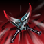
- 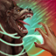
- 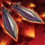
- 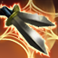
- 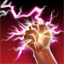
- 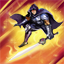
- 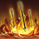
- 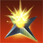
- 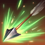
- 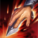
- 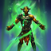
- 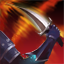